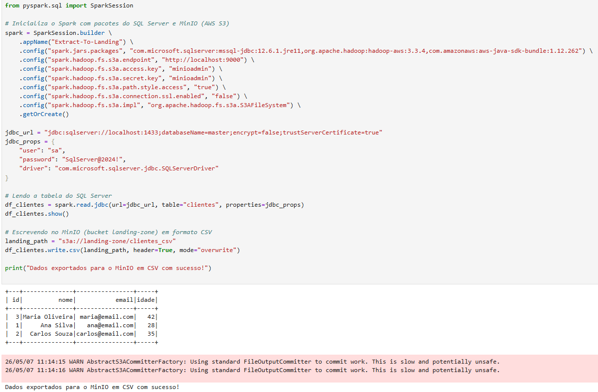
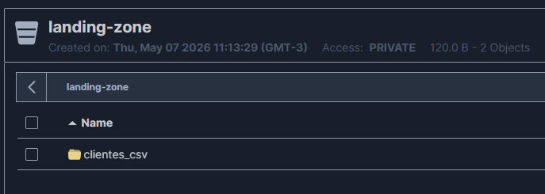

Requisito 1: Extração do Banco de Dados para a Landing Zone
O que foi solicitado
"O trabalho 2 é um complemento do trabalho 1, onde vocês deverão implementar a extração dos dados de todas as tabelas de um banco de dados (relacional ou não relacional - livre escolha) e gravar em um bucket no MinIO chamado 'landing-zone' no formato CSV."
Nossa Implementação
Para atender a este requisito, escolhemos a abordagem Relacional, utilizando o SQL Server como nosso banco de dados de origem.
O fluxo desenvolvido realiza os seguintes passos:
1. Conecta-se ao SQL Server (rodando isoladamente em um container Docker) via PySpark utilizando o driver JDBC oficial da Microsoft.
2. Realiza a leitura integral das tabelas.
3. Escreve os dados de forma bruta (raw data) no bucket landing-zone, criado no MinIO, utilizando rigorosamente o formato CSV conforme requisitado.
Evidências de Execução (Prints)
Para comprovar o atendimento perfeito deste requisito, abaixo estão os registros visuais da nossa execução:
Execução da Extração via Código

Persistência no MinIO (Bucket Landing Zone)
